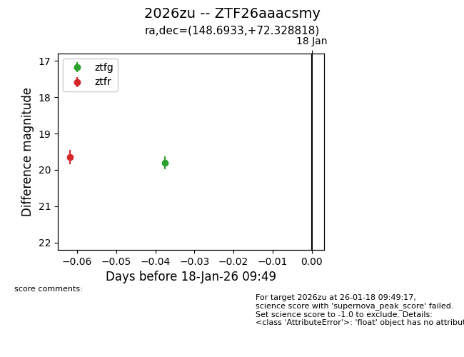
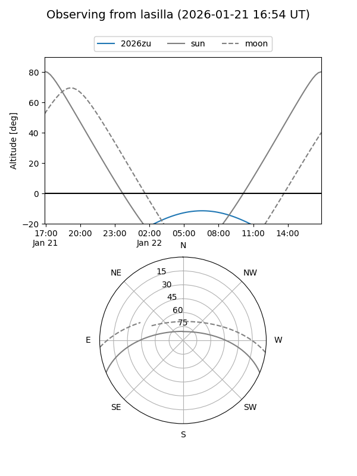
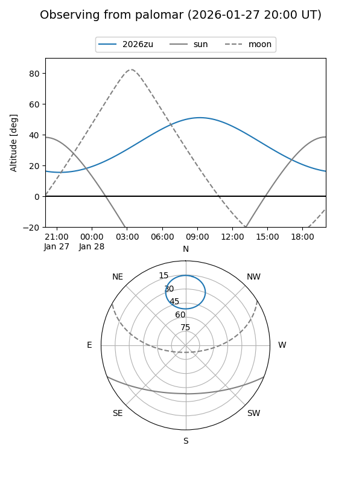
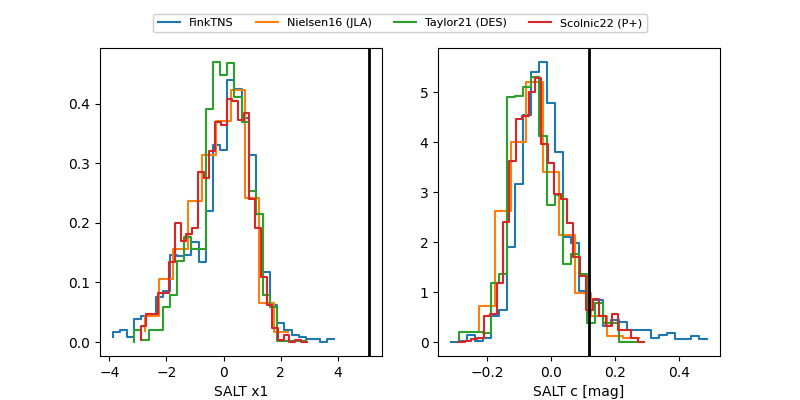

2026zu
Target 2026zu at 2026-01-25 07:56
Aliases and brokers:
FINK: link
Lasair: link
ALeRCE: link
TNS: link
YSE: link
alt names
ZTF26aaacsmy (ztf,fink_ztf)
2026zu (tns,yse)
Coordinates:
equatorial (ra, dec) = 148.6933,+72.32882
equatorial (HMS+DMS) = 09:54:46.40,+72:19:43.75
galactic (l, b) = (138.7062,+38.92181)
Flags:
Photometry:
last ztfg=19.53, ztfr=19.54
3 ztfg, 2 ztfr detections
Lightcurve

Visibility


Additional plots
